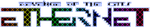

Revenge of the cats
Dieser Artikel wurde für die folgenden Ubuntu-Versionen getestet:
Ubuntu 14.04 Trusty Tahr
Zum Verständnis dieses Artikels sind folgende Seiten hilfreich:

Revenge of the cats: Ethernet  (kurz: ROTC) ist ein schnelllebiges Multiplayer-FPS-Spiel. Die Spielweise baut auf Teamwork auf und sorgt für eine non-stop-action, da man nicht "sterben" kann. Die Sichtweise und Spielart ist die eines Ego-Shooters. Es gibt gewisse Einflüsse von Starsiege: Tribes und Tron.
(kurz: ROTC) ist ein schnelllebiges Multiplayer-FPS-Spiel. Die Spielweise baut auf Teamwork auf und sorgt für eine non-stop-action, da man nicht "sterben" kann. Die Sichtweise und Spielart ist die eines Ego-Shooters. Es gibt gewisse Einflüsse von Starsiege: Tribes und Tron.
Das Spiel befindet sich bis noch in der Entwicklung, läuft aber sehr stabil.
Das Ziel ist es die Zonen auf dem Spielfeld bzw. Arena zu kontrollieren und somit den Gegner immer weiter zurückzudrängen. Dazu stehen einem einige Waffen zur Verfügung, die man beliebig wechseln kann.
| Startmenü | Etherform |
Installation¶
Der neuste Prototyp kann von der Projektseite heruntergeladen werden: ROTC Prototype for Linux
Da nur eine 32-bit Binary vorliegt, müssen erst die 32-bit Bibliotheken für ein 64-bit-System installiert werden [1] :
ia32-libs (universe)
 mit apturl
mit apturl
Paketliste zum Kopieren:
sudo apt-get install ia32-libs
sudo aptitude install ia32-libs
Nachdem das heruntergeladene Archiv entpackt wurde [2], kann das Spiel sofort über die Binärdatei rotc.bin aus dem Spieleverzeichnis gestartet werden [4]. Auf Wunsch kann ein Menüeintrag angelegt werden [5].
Spielbeginn¶
Nach dem Starten kommt man mit einem Klick auf "Join Area" weiter zu einem Fenster mit den verfügbaren Servern. Dazu geht man auf "Query Master", wählt einen Server aus und rechts unten auf "Join Area".
Es öffnet sich erneut ein Fenster, in dem Infortmationen zu dem Spiel und dem Server stehen. Zuerst müssen noch Daten heruntergeladen werden, das man am oberen Ladebalken erkennt. Erst dann kann man sich für eine Gruppe (Blau oder Rot) entscheiden und dem Spiel beitreten.
Spielweise¶
Spieler¶
Es gibt zwei Erscheinungsformen der Spieler. Am Anfang startet man als die fliegende, unbesiegbare "Etherform". In dieser Form kann man nur Lebensenergie sammeln und schnell herumfliegen. Sollte man sterben bzw. die Lebensenergie, erkennbar am linken Balken, ausgehen, geht man automatisch in die "Etherform" über. Hier kann man durch drücken der Zahlentasten die Waffen wählen.
Durch drücken von Tab ⇆ kommt man in die humanoide, waffentragende physische Manifestation, auch "CAT" genannt. Man kann aber nur in einer Zone seines Teams sich in den CAT transformieren. Nur als CAT kann man Zonen erobern, indem kein Gegner sich auf dieser befindet.
Waffen¶
In der Etherform drück man eine Zahl von 1 bis 3 um die verfügbaren Slots zu belegen. Dann zeigen sich die verschiedenen Waffen:
Blaster: Kommt einer Schrotflinte gleich
Battle Rifle: Verschießt zwei Schuss, die an Gegenständen reflektieren
Sniper ROFL: Nach kurzem Laden wird ein gezielter Schuss abgefeuert (trifft sehr genau, es empfiehlt sich zu zoomen durch nach vorne scrollen)
Minigun: Gibt schnell viele Schuss ab
Bubble-Gun: Verschießt Bomben, die nach ein paar Sekunden explodieren
Es kann noch durch drücken von E das Etherboard gewählt werden. Als CAT wird mit Strg links das Etherboard benutzt, mit dem man sich sehr schnell fortbewegen kann.
Um eine Granate zu werden, drück man die mittlere Maustaste  . Je länger diese gedrückt wird, desto weiter fliegt die Granate.
. Je länger diese gedrückt wird, desto weiter fliegt die Granate.
Jeder Schuss benötigt Energie, erkennbar am rechten Balken. Einige Waffen brauchen auch eine "Erholungszeit", der durch einen waagrechten Balken dargestellt wird.
Durch Drücken von X kann ein Stoß (sogenannte B.O.U.N.C.E.) abgegeben werden, falls ein Gegner sich recht nah aufhält. Dies ist auch gut gegen schnelle Feinde, die gerade z.B. mit dem Etherboard unterwegs sind.
Wenn man dem Gegner durch die Waffen genügend Schaden zufügen kann, wird ein Teil dieses Schadens der eigenen Lebensenergie zugeführt. Wenn der Lebensenergiebalken voll ist, wird die Energie gespeichert. Das erkennt man daran, dass man sozusagen in Flammen steht.
Disc¶
 | |
| gegnerische Disc | markierter CAT |
Wie in dem Film Tron kann man s.g. "Discs" werfen. Dazu gibt es aber einige Bedingungen:
Als erstes muss man dem Gegner Schaden zugefügt werden, durch Waffen (Blaster oder Battle Rifle) oder Granaten. Wenn dieser groß genug ist, wird der Feind "markiert". Wenn man dann innerhalb von zwei Sekunden reagiert, kann man eine Disc werfen. Hier kann man jetzt mit der rechten Maustaste  eine Requel-Disc werfen, die einem gegnerische Energie übergibt und den anderen CAT sogar verfolgt. Mit
X wird eine explosive Disc geworfen.
eine Requel-Disc werfen, die einem gegnerische Energie übergibt und den anderen CAT sogar verfolgt. Mit
X wird eine explosive Disc geworfen.
Gegnerische Discs kann man abwehren. Dazu muss man mit dem eigenen Fadenkreuz die Discs anvisieren und dann die rechte Maustaste drücken.
Interface¶
| Interface | Etherform und Waffenwahl |
Auf der linken Seite befindet sich der Balken mit der Lebensenergie (Health). Sollte dieser leer werden, so verwandelt man sich automatisch wieder zurück in die fliegende Etherform.
Der rechte Balken zeigt Rüstung (Armor). Diese wird in Anspruch genommen beim Abfeuern einer Waffe, bei Luftsprünge (mehrmaliges drücken von der Leertaste ), beim Stoss (BOUNCE) und beim Werfen einer Granate. Diese Energie dient auch als Puffer für Schaden, und sollte deshalb immer im Auge behalten werden. Sollte der Balken durch oftes Schießen recht klein sein, so wird der durch den Gegner verursachende Schaden recht schnell von der Lebensenergie abgezogen. Aber zum Glück lädt sich der rechte Balken schnell wieder auf.
Oben links erscheint der Chat und allgemeine Spielinformationen. Unten links sieht man die Karte mit den Zonen, die die jeweilige Farbe der Besitzer haben.
Ist man in der Etherform, befindet sich neben dem Healt-Balken die Slots, wo die Waffen ausgewählt werden können.
Spielverlauf¶
Man transformiert sich zunächst von der Etherform in den CAT. Nun gilt es den Gegner immer weiter zurückzudrängen und somit immer mehr Zonen erobern. Befinden sich nur noch CAT´s einer Mannschaft auf einer Zone, so ist die erobert. Es können aber immer nur solche Zonen in Beschlag genommen werden, die schon an einer eroberten Zone angrenzt.
Sollte man sterben und sich in der Etherform befinden, so kann man sich nur einer Zone zurückverwandeln, die einem gehört. Also keine gegnerischen Fläche oder auf einer, auf der gerade gekämpft wird. Es braucht aber auch einige Sekunden bis man sich wieder aufgeladen hat und damit auch die Erlaubnis als CAT wieder ins Spiel einzugreifen.
Gehören alle Zonen einer Mannschaft, so hat diese gewonnen.
Tastenkürzel¶
Standartmäßig sind folgende Tasten belegt:
| Tastenkürzel | |||||
| Taste(n) | CAT | Etherform | Taste(n) | CAT | Etherform |
| W | Vorwärts | Vorwärts | 1 - 3 | Waffe auswählen | Slots und Waffe wählen |
| A | Links | Links |  | Feuer | |
| S | Rückwärts | Rückwärts | | Granate werfen | |
| D | Rechts | Rechts | scrollen | Zoomen | |
| Sprung (öfters: Luftsprünge) | nach Oben | | Disc werfen | ||
| Strg links | Etherboard | nach unten | Z | Global Chat | Global Chat |
| Q | nächste Waffe | T | Team-Chat | Team-Chat | |
| X | Stoss / explos. Disc | ||||

- Erstellt mit Inyoka
-
 2004 – 2017 ubuntuusers.de • Einige Rechte vorbehalten
2004 – 2017 ubuntuusers.de • Einige Rechte vorbehalten
Lizenz • Kontakt • Datenschutz • Impressum • Serverstatus -
Serverhousing gespendet von